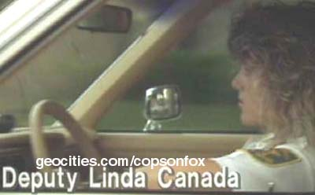

If you have any info, pictures or are looking for episodes or specials on DVD then
email me.
Biography |
News |
Pictures | Resume
Deputy Linda Canada appeared on season 1 of Cops and right away became the face of the show because of her pretty, young looks and long, blonde, big teased 80s hair and makeup stood out amongst the older cops. She appeared in 5 of the first 6 episodes, 2 best ofs, 1 home video and the 20th anniversary DVD. She was very photogenic, popular and was the first person on the show to appear on Late Night With David Letterman #1180. 8/2/89. This was nearly unheard of as only stars would promote shows, when now with the glut or reality TV it is the norm. In reality she might never have been on because she wasn't working where they were filming. John Langley felt they should have a female to vary the pallet of Cops. She was picked because she was a girlfriend of Deputy Jerald Wurms even though she worked in a different district. She had two kids when they showed her at home and he was talking about moving in with her. He said he was with her because she was a cop, feminine looking and yet strong. They were living together soon after the time of taping and then engaged. The were married and he became the father of her sons including John who was born 1987 and he took his name. I find no record that Linda took Wurms as her name. Jerry says unfortunately it didn't work out, that's the way it works in police work. It's hard to have to have 2 cops in one house. After the divorce, both have since remarried and she added Struck to her name becoming Canada-Struck. She still works in Broward County in District 10 where she was promoted to Sgt. in the 1990s. On 1/22/03 she went from Sgt. to Lt. In May 2005 she made the news there in a bad way because her son got involved in street racing and she was quoted in a lengthy article about it. The last news item I found on her was 4/28/07 when she attended the "8th Annual Rebuilding Together Day" project in the City of Oakland Park. This one day event, held nationally by Rebuilding Together, brought approximately 200-300 volunteers to Oakland Park to refurbish 13 separate locations within the Harlem McBride neighborhood. Jerry is also still an officer, now assigned to the Miami airport.
Deerfield teen steering clear of tickets for street racing
Wurms' parents, both BSO veterans, deny son has legal `privileges.'
By Chris Kahn, Staff Writer 5/30/05
Florida's street racing law was meant to stop people like John Wurms. The
18-year-old mechanic from Deerfield Beach tears up roads in Broward and Palm
Beach counties, hitting 100 to 140 mph in his shiny red Ford Focus. In 2 1/2
years, Wurms has received at least 14 traffic tickets, court records show. None
was for street racing, only two resulted in convictions, and the toughest
penalty he's faced is a $130 fine for speeding. Wurms is not alone in beating
Florida's street racing law. Police and prosecutors often don't pursue cases
because they're hard to prove. Only about one in 10 racing charges statewide
leads to conviction. While Wurms fights tickets in court, he brags that he also
has another advantage - he claims he has pull with the Broward Sheriff's Office,
where his parents work. Court records show that Broward sheriff's deputies have
never ticketed Wurms, though many other law enforcement agencies have: Florida
Highway Patrol, Palm Beach County Sheriff's Office, and Coral Springs, Delray
Beach and Boca Raton police. As the son of Lt. Linda Canada-Stuck and Sgt.
Jerald Wurms, both 18-year Broward Sheriff's Office veterans, John Wurms said he
has "privileges." Instead of giving him citations, Wurms said, Broward
deputies talk to his parents.
But Wurms' parents deny that claim. His mother, one of four lieutenants in the
sheriff's Deerfield Beach district, said she did not know he raced. She said her
son, who lives on his own, is responsible for his own actions. "I won't
[even] pay to have his car fixed," Canada-Stuck said. "I don't have
anything to do with this. I have no idea what he's doing." His father, who
is assigned to Fort Lauderdale-Hollywood International Airport, said he has
received calls from officers who have pulled over his son, but Jerald Wurms said
he has never asked for favors. "If a police officer calls me about his
driving, I say, `Do what you need to do,'" Jerald Wurms said.
Police and prosecutors have not taken street racing seriously enough, said State
Rep. John "Q" Quinones, R-Kissimmee. During the recent legislative
session, Quinones pushed through a tougher version of Florida's street racing
law. The new law, if approved by the governor, would take effect Oct. 1. It
would raise street racing from a second-degree to first-degree misdemeanor with
maximum penalties of a $1,000 fine and one year in jail. Those convicted of
racing again within five years could lose their cars. But even with the stiffer
penalties, street racing would remain as hard to prove in court, South Florida
prosecutors said. Prosecutors need witnesses who saw the cars speeding, and also
must prove the drivers were competing against each other, said Jose Baldor, the
assistant chief for DUI and traffic offenses with the Miami-Dade State
Attorney's Office. "Some of these drivers don't even know each other,"
Baldor said. "They're at a red light and they both have fast cars, and it's
like, `I'm going to race you to the next light.'"
Only 11 percent of the 4,903 street racing tickets written statewide resulted in
convictions in 2003, according to the latest statistics from the Florida Uniform
Traffic Citations report. In contrast, 65 percent of the 65,113 citations for
driving under the influence that year resulted in convictions. Wurms, a self-described street racer, has never been cited under the original
street racing law, enacted in 2003, the year after he got his driver's license.
But he's faced plenty of other citations. Court records in Broward and Palm
Beach counties show police stopped Wurms for speeding five times, careless
driving three times and other traffic violations six times. According to court
records, six of the charges were dismissed. Four were settled with
"adjudication withheld" agreements that allowed Wurms to avoid
conviction, though he was still ordered to pay fines ranging from $50 to $130.
Wurms was convicted of one charge of operating an unsafe vehicle and another
charge of using improper equipment. Two other charges, for having an obscured
tag and violating a traffic device, are pending.
Wurms said he fights his tickets, paying attorney's fees to keep points off his
license and avoid suspensions. According to the state Department of Motor
Vehicles, Wurms has no points on his driving record and his license has never
been suspended. "I have a bunch of lawyers," Wurms said. Though he has
never gotten a ticket from the Broward Sheriff's Office, Wurms said he often
races in the Deerfield Beach area because that is the sheriff's district where
his mother works. Twice in March, a South Florida Sun-Sentinel reporter watched
as Wurms was pulled over by sheriff's deputies in northeast Broward. He didn't
get a ticket either time, court records show. Late at night on March 18,
deputies stopped Wurms after he raced another car at about 100 mph on Powerline
Road. Ten days later, also late at night, deputies stopped Wurms after he said
he skidded through the intersection of Powerline Road and Southwest 10th Street
in a high-speed stunt called "drifting." Although Wurms doesn't live
with either parent, he said Broward deputies spoke with his mother on the phone
both times they stopped him. Wurms said he got a tongue lashing from his mother,
but that was the end of it. Canada-Stuck disputed her son's account.
"I have nothing to do with him getting out of tickets," she said.
"I would never condone anyone fixing his tickets. If people are not writing
a ticket because that person's family is in law enforcement, that's their own
problem." Sheriff's spokeswoman Cheryl Stopnick said she doesn't know why
deputies did not cite Wurms either time. "That's up to the law enforcement
officer at the scene," Stopnick said. Despite repeated requests, Stopnick
declined to provide any documentation on traffic stops involving Wurms, saying
it would be too difficult to track down such information. Wurms said he told his
father he was racing the night he crashed into the back of a Buick in Boca Raton
on Sept. 17, 2004, totaling his car and crushing his left hand. At the hospital,
Jerald Wurms said he yelled at his son "till I was blue in my face."
But John Boylston, the Boca Raton community service officer investigating the
crash, said neither father nor son told him anything about racing. "I
probably would have looked a little more into that," Boylston said. Jerald
Wurms said he did not ask for special favors his son; Boylston agreed with that
account. "I was there as a father," Jerald Wurms said. "I didn't
do anything with the investigators."
Boylston cited John Wurms for careless driving, a noncriminal infraction that
comes with a $115 fine. But Boylston failed to include specific details
explaining the careless driving charge, prompting the judge to dismiss the case,
court records show. David Armstrong, the owner of the Buick that Wurms struck on
Yamato Road, said he was shocked when a reporter told him that Wurms said he had
been racing, and that the charges had been dismissed. "He's going to keep
doing it, doing it, until he ends up killing himself or someone else," said
Armstrong, 70. Five months after Wurms got out of the hospital, he said he
bought another Ford Focus and started building another racer.
Linda talking to a street prostitute in episode #100
| Title | Year(s) |
| Cops - Episodes 101-4, 106, BOC002, 2038, BOC, 20th | 1989-07 |
| Late Night With David Letterman #1180. | 8/2/89 |
© 2001-09 Thrawn for Cops on Fox